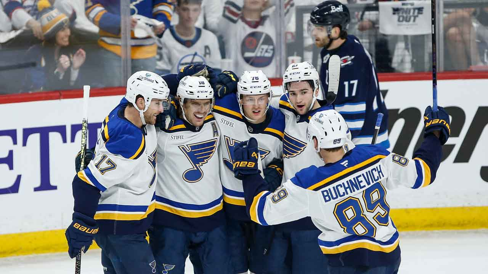
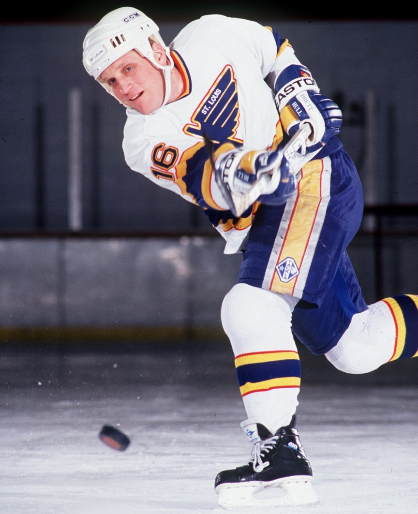
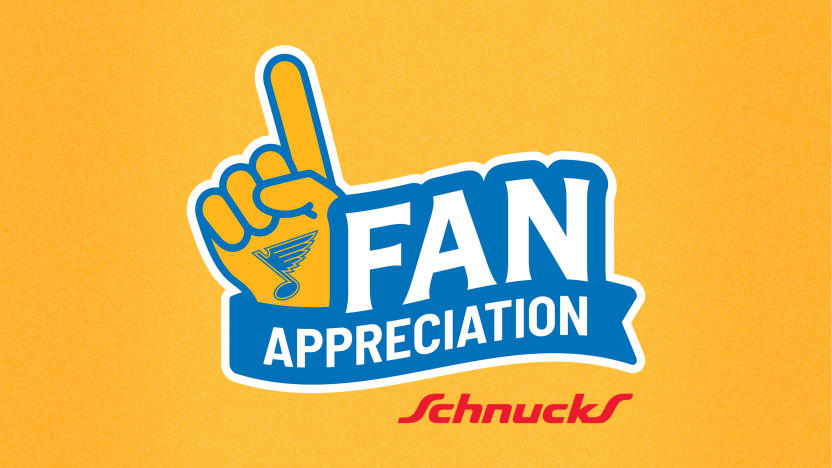
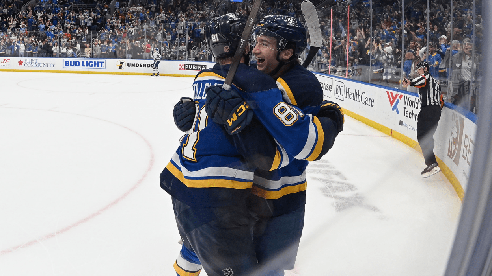
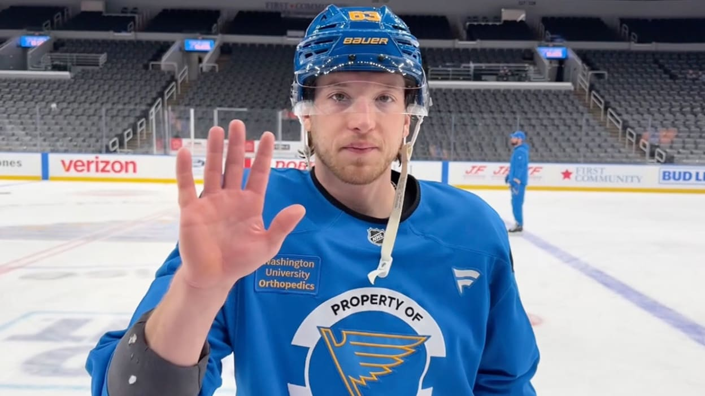

BEM VINDO AO
ST. LOUIS BLUES
Os Blues surgiram na expansão de 1967 e chegaram à final da Stanley Cup em seus três primeiros anos, estabelecendo St. Louis como um reduto apaixonado pelo hockey no Missouri. O logotipo da nota musical homenageia a herança do jazz na cidade, criando uma das identidades visuais mais clássicas e respeitadas de toda a liga.
Após décadas de espera, a glória máxima veio em 2019, em uma das reviravoltas mais improváveis do esporte. O time saiu da lanterna da liga em janeiro para o título em junho, embalado pela música "Gloria" e por uma defesa física intransponível, culminando na vitória histórica sobre o Boston Bruins no jogo 7 da grande final.
Em 2026, a franquia vive um rejuvenescimento total sob o comando de Doug Armstrong. Com a saída de veteranos pesados, os Blues mudaram o foco para um estilo de jogo veloz e técnico, centrando sua reconstrução em jovens estrelas e em uma defesa móvel para tentar levar a "Cup" de volta às margens do Rio Mississippi.
CONHEÇA OS
JOGADORES

Brett Hull
Ala Direita
1988–1998
AGENDA
26
28
30
1
3
5
NOTÍCIAS

Os Blues celebram a Semana de Apreciação dos Fãs de 6 a 16 de abril.

Holloway garante a vitória a 3 segundos do fim da prorrogação, Blues vencem os Sharks.
St. Louis tem um retrospecto de 9-1-2 nos últimos 12 jogos; San Jose perdeu 6 partidas seguidas.

Blues e NHL celebrarão a Noite da Conscientização sobre a Língua Americana de Sinais com transmissão alternativa em Língua Americana de Sinais.
A transmissão de 14 de abril contará com narração ao vivo feita por comentaristas surdos, juntamente com ativações na arena para a comunidade surda e com deficiência auditiva; disponível no aplicativo da ESPN para assinantes do plano ESPN Unlimited.